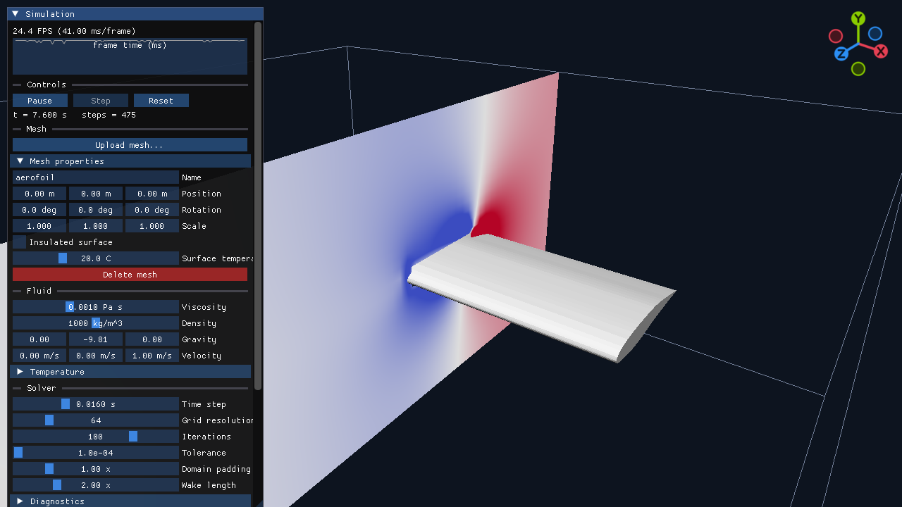
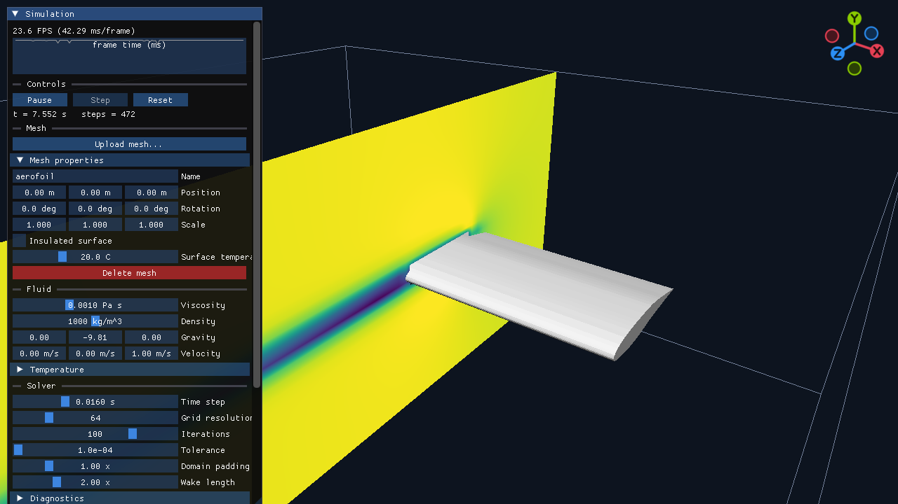
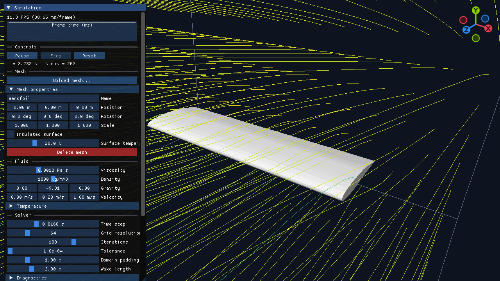
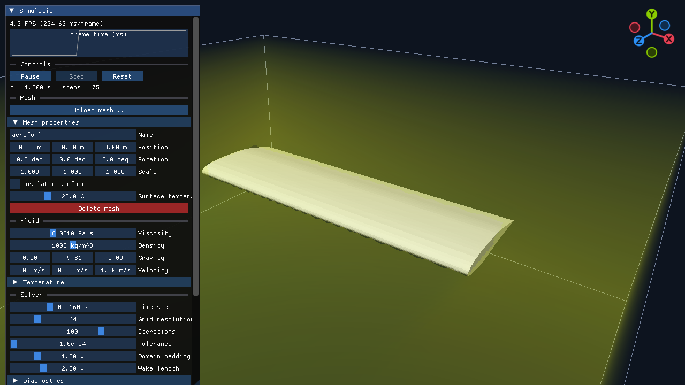
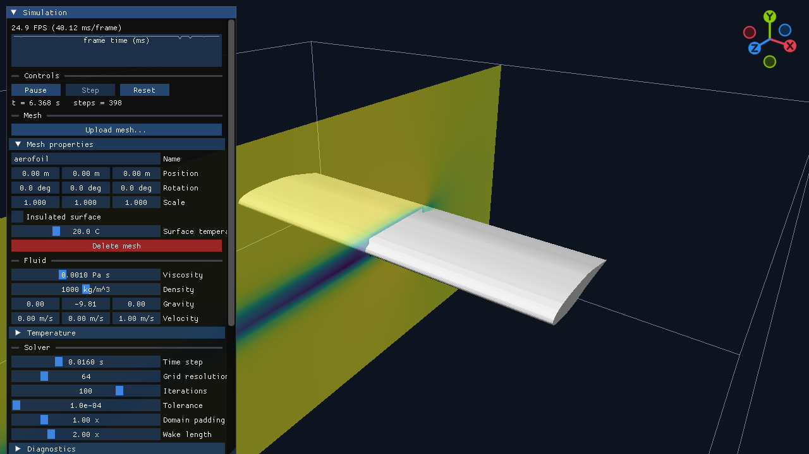
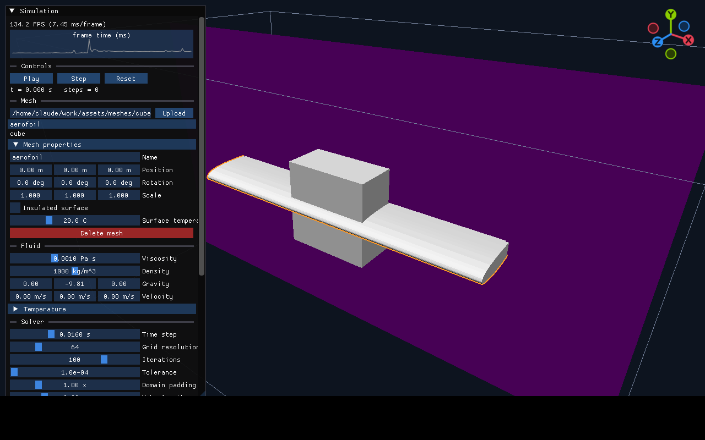
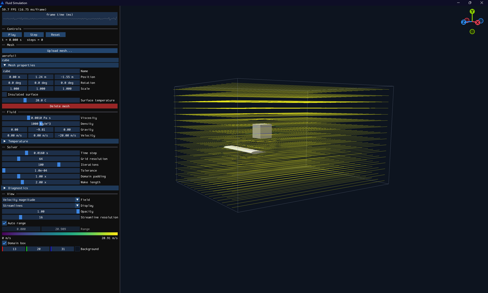

Personal project
3D Fluid Simulator

Overview
A 3D fluid simulator written in C++ that solves the incompressible Navier–Stokes equations on a grid and simulates the flow around custom 3D meshes. You upload one or more closed .obj meshes, set the free-stream velocity and fluid properties, and watch the velocity, pressure and temperature fields develop in real time, shown as a slice, a transparent volume or streamlines.
What I did
- Wrote the solver from scratch on a staggered MAC grid: semi-Lagrangian advection with second-order Runge–Kutta backtracing, implicit viscosity, and a pressure projection solved with a MIC(0)-preconditioned conjugate gradient method.
- Added temperature as an advected and diffused scalar with optional Boussinesq buoyancy, so meshes can be heated or cooled (fixed surface temperature or insulated).
- Turned each mesh into a signed distance field on the grid so any number of closed meshes act as solid obstacles, with inflow and outflow boundaries set by the free-stream velocity.
- Built the OpenGL 4.6 renderer: a colour-mapped slice plane, a ray-marched volume view and streamlines traced from a seed plane upstream of the mesh, with an opacity slider and a colour bar for velocity, pressure, pressure coefficient (Cp) and temperature.
- Made the interface with Dear ImGui: Blender-style camera controls (orbit, pan, zoom),
.objupload, click-to-select meshes with a properties panel for position, rotation, scale and surface temperature, an orange hover outline, and a diagnostics panel (CFL number, solver iterations, residual, Reynolds number). - Wrote headless solver tests: still water, uniform flow, flow past a sphere, a heated sphere, two obstacles and mesh picking.
What I learned
How a grid-based CFD solver is put together: splitting each time step into advection, forces, diffusion and a pressure projection that keeps the flow divergence-free, and why the pressure solve needs a preconditioned iterative method to run at interactive rates. Validating against known results was just as important: for flow past a sphere at 64 cells the solver gives a stagnation pressure coefficient of about 0.85 and a side suction of about −0.66, against inviscid values of 1 and −1.25, and I learned to read that gap as the effect of a coarse grid and numerical diffusion rather than a bug. I also learned to keep the solver separate from the OpenGL code so it can be tested without a window.
Gallery






